Overview
In this tutorial, we will be adding the "sprinting" functionality to the player character that was built in the first part of this series (Creating a Player using C++).
By the end of this tutorial, your player character will have two different travel speeds, walking and running, which you will be able to configure directly within CRYENGINE.
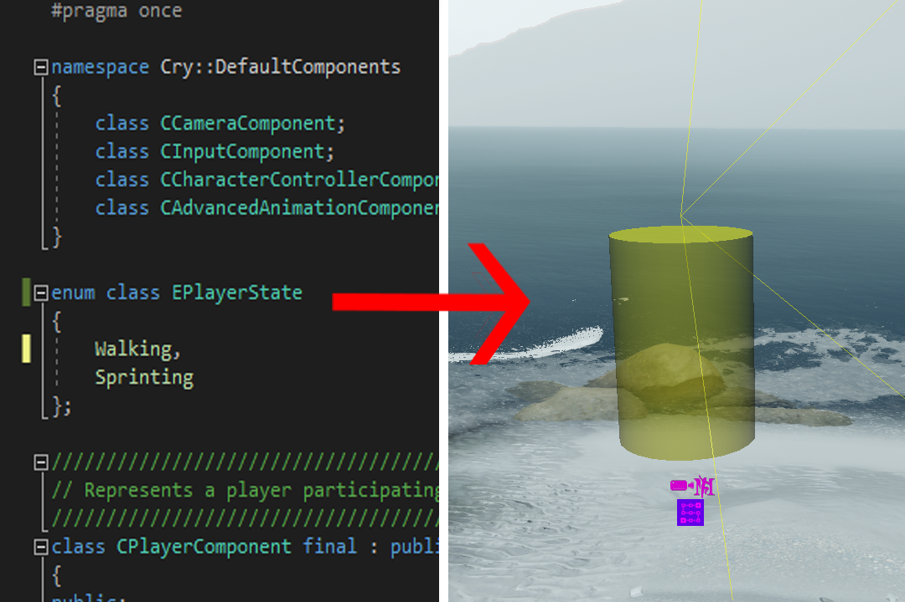
Prerequisites
- CRYENGINE 5.7 LTS
- Visual Studio (2017, 2019 or 2020 work just fine) or any other IDE or code editor of your choice
Getting Started
Optimizing the Project
Before you begin, it is recommend that you optimize your project through Forward Declaration. This is not mandatory, but it can help improve your project's performance and avoid errors later on.
Open Game.sln, which can be found within the solution folder of your project's main directory:
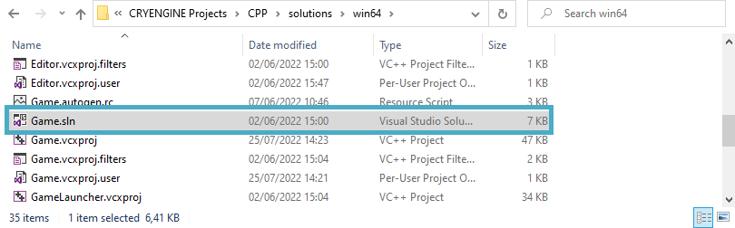
The Game.sln file within the solutions folder
If you have not generated a solution, or are unsure about the location of the Game.sln file, follow the first steps of the Creating a Player using C++ tutorial.
- Copy all of the Component
#includelines within Player.h, and paste them under the existing#includeat the top of Player.cpp: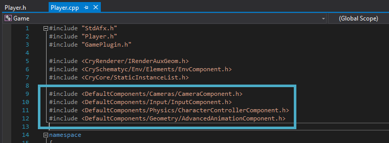
The Component #include lines
Attempting to build a solution at this point would fail as the components' classes would no longer be recognized.
Within Player.h, at the top, create a
namespacefor the Components, and beneath that type in their classes within curly brackets: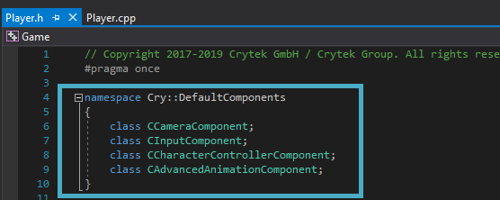
The Component classes
Adding Sprinting
Adding a PlayerState
Underneath the
namespaceyou just created in Player.h, add an enumerator and name it <EPlayerState>:enum class EPlayerStateNote that "
class" was added betweenenumandEPlayerStateso as to not pollute the scope.Underneath that, define and name the player states:
{ Walking, Sprinting };
Finished EPlayerState enumerator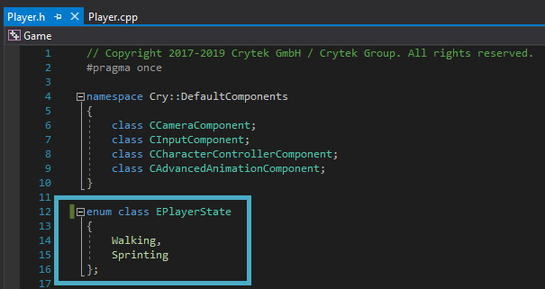
At the bottom of the
privateclass within Player.h, declareEPlayerStateand add a member variable:EPlayerState m_currentPlayerState;Underneath the existing float member variables in the
privateclass, create two more – one for walking and one for sprinting:float m_walkSpeed; float m_runSpeed;
The private class with three new member variables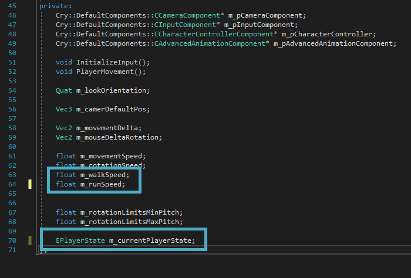
In the
publicclass of Player.h, replace the existingAddMemberline for "m_movementSpeed"with anAddMemberfor "m_walkspeed":desc.AddMember(&CPlayerComponent::m_walkSpeed, 'pws', "playerwalkspeed", "Player Walk Speed", "Sets the Player Walk Speed", ZERO);
Replaced m_movementSpeed line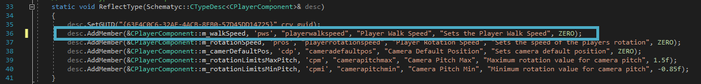
Copy the
m_walkSpeed AddMemberline you just created and paste it immediately below. Modify it so that you have anAddMemberline for "m_runSpeed":desc.AddMember(&CPlayerComponent::m_runSpeed, 'prs', "playerrunspeed", "Player Run Speed", "Sets the Player Run Speed", ZERO);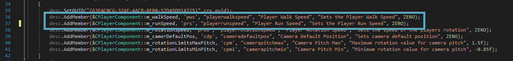
The completed AddMember lines for the two new member variables
Since
m_walkSpeedis now the default walking speed which you want to be able to modify, you will want to replacem_movementSpeed’s ability to be modified. You will still be usingm_movementSpeed, but you will no longer need the ability to modify its values.
Adding an Input
Next, you need to define which inputs will be used for sprinting, and how they are used.
Under
InitializeInputwithin Player.cpp, copy and paste an existingRegisterActionandBindActionline, and replace the name of the input, as well as theeKIfor the key you want to use:m_pInputComponent->RegisterAction("player", "sprint", [this](int activationMode, float value) {m_movementDelta.x = -value; }); m_pInputComponent->BindAction("player", "sprint", eAID_KeyboardMouse, eKI_LShift);
The name of the input has been changed to "sprint", and the eKI set to LShift (Left Shift)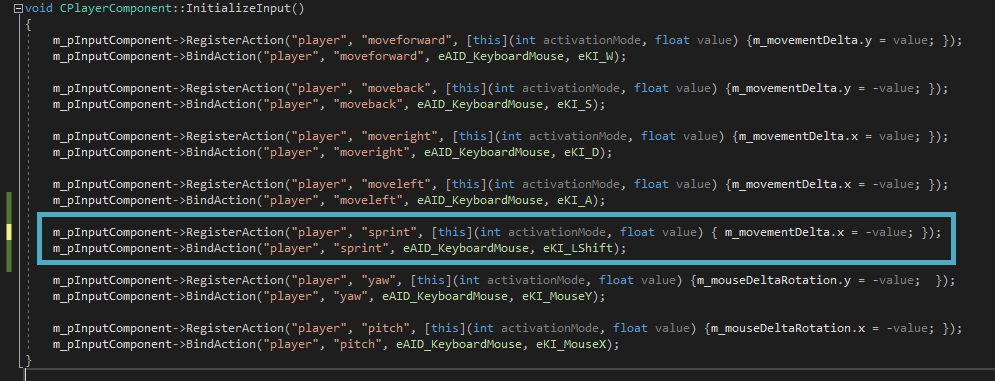
- Delete "
m_movementDelta.x= -value;"from within thelambdaof the new sprintingRegisterActionline, and move the curly brackets below it: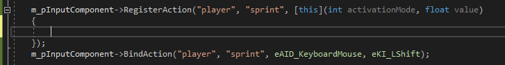
What the restructured line should look like Within these curly brackets, add the following
ifstatement:if (activationMode == (int)eAAM_OnPress) { m_currentPlayerState = EPlayerState::Sprinting; }This line means “if
eAAM_OnPress(the input) is pressed, the player will sprint”.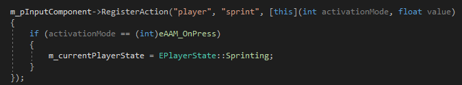
Restructured line with the if statement
Add the following
else ifstatement just below the previous lines:else if (activationMode == eAAM_OnRelease) { m_currentPlayerState = EPlayerState::Walking; }This line means “if
eAAM_OnPress(the input) is not pressed, the player will walk”.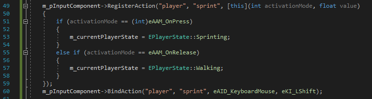
The completed RegisterAction and BindAction line with the "if"/"else if" statements
Core Functionality
Finally, you must define the core logic that will move the player character.
At the bottom of Player.cpp, create a new empty line underneath the
Normalize. This is where you will add the logic for the sprinting:float playerMoveSpeed = m_currentPlayerState == EPlayerState::Sprinting ? m_runSpeed : m_walkSpeed;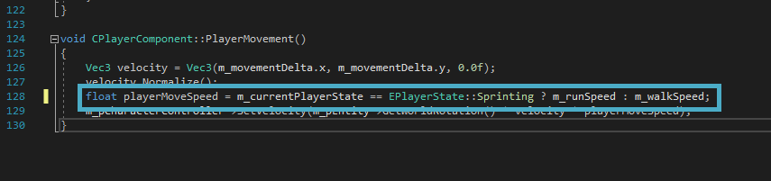
Adding sprint logic
This line means that
playerMoveSpeedis equal to thecurrentPlayerState, which is either sprinting or walking, depending on the input, and the player’s move speed will change according to the current player state. The question mark afterEPlayerStateis a ternary operator, which functions as anifstatement. Thatifstatement is what defines which player state will serve as the player’s move speed.- At the end of the very last line, beneath the line you just added, change the "
m_movementSpeed"right after “* velocity *” to the name of the player state member variable "playerMoveSpeed":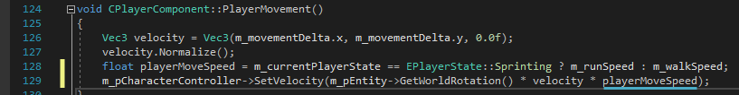
The final sprinting logic
Press Ctrl + Shift + S to save all tabs and build the solution. Once built, launch it in CRYENGINE 5.7 LTS.
Testing the Character
Once the solution is built, you can test your player character in the Sandbox Editor.
Open the level you created in the Creating a Player using C++ tutorial, and select the previously placed Player Entity.
If you don’t have the Player Entity still placed, drag an Empty Entity into the scene and add a CPlayerComponent to it.
With the Player Entity selected, open the Properties panel and scroll down to the CPlayerComponent properties, where you should be able to configure the character's walking and running speed.
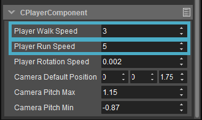
CPlayerComponent Entity Component propertiesThe average walking speed can be anywhere from 2-5, with running usually being around 5-8. Tune these values and find a speed that suits your game.
With these variables set for your Player Entity’s CPlayerComponent properties, you can now press Ctrl + G and test out your character.
Conclusion
This concludes Part 2 of the Creating a Player using C++ tutorial. To learn more about C++ in CRYENGINE and/or other topics, please refer to the CRYENGINE V Manual.
Video Tutorial
You can also follow this tutorial series in video form on our YouTube channel:
Related Information
Tutorial - Creating a Player using C++
Tutorial - Coding in C++ - Creating a Player Controller - CRYENGINE Summer Academy